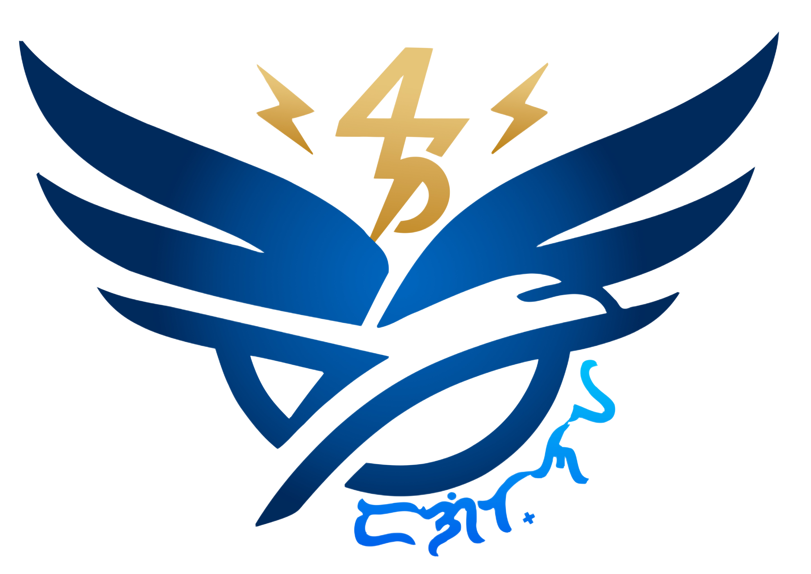
DAGITLAYA
⚡️ Dagitab ng Pag-asa tungo sa Ligtas at Malayang Paggabay sa Himpapawid ✈️
BATCH 45: BASIC COMMUNICATION NAVIGATION SURVEILLANCE SYSTEM OFFICER
Get in TouchAbout Us
DAGITAB (electric spark) + LAYA (freedom)
As future CNSSOs, electricity represents the core of our discipline: powering the systems of communication, navigation, and surveillance that ensure safe and efficient air traffic management. With members from electrical, electronics, and mechanical engineering backgrounds, "𝐃𝐚𝐠𝐢𝐭𝐚𝐛" symbolizes the spark of innovation, precision, and excellence that unites us. Dagitlaya 45 embodies the spark that enables the freedom of flight. We are the unseen force behind every signal, navigation aid, and communication link that keeps airspace safe, structured, and continuously connected. Like electricity, we are precise, reliable, and essential. In this context, "𝐋𝐚𝐲𝐚" (freedom) represents the ability of aviation to operate seamlessly within a highly organized system. It reflects the confidence of flight, made possible through accurate navigation, reliable surveillance, and uninterrupted communication. It is freedom defined by safety, coordination, and precision.
Our Journey
01. Application
Nationwide ApplicationApplication Summary
-
Submission of application forms nationwide
-
Document verification and eligibility screening
-
Thousands of aspirants applied from across the country
02. Examination
National Level AssessmentExamination Summary
-
Comprehensive technical and aptitude assessment
-
Nationwide examination centers
-
Top performers advanced to next stage
03. Panel Interview
Personal & Technical AssessmentPanel Interview Summary
-
Face-to-face panel interview with experts
-
Technical knowledge and problem-solving assessment
-
Communication skills and personality evaluation
04. Medical Examination
Health & Fitness AssessmentMedical Summary
-
Physical and mental health evaluation
-
Vision, hearing, and overall fitness tests
-
Conducted by authorized medical boards
05. Orientation & Training Proper
Intensive Training ProgramTraining Summary
-
Comprehensive orientation on policies and protocols
-
Technical and non-technical skill development
-
Hands-on training with industry experts
-
Regular assessments and performance evaluation
06. On-the-Job Training (OJT)
Practical Field ExperienceOJT Summary
-
Real-world application of learned skills
-
Mentorship from experienced professionals
-
Exposure to actual work environment
-
Performance evaluation and feedback sessions
07. Graduation
Completion CeremonyGraduation Summary
-
Formal graduation ceremony
-
Certificate of completion distribution
-
Recognition of outstanding trainees
-
Official transition to full-duty status
08. Licensing and Deployment
Official AssignmentLicensing and Deployment Summary
-
Official Licensing exam
-
Oath taking and pledge of commitment
-
Deployment to designated stations
-
Start of full-duty service
BCNSSO Batch 45
-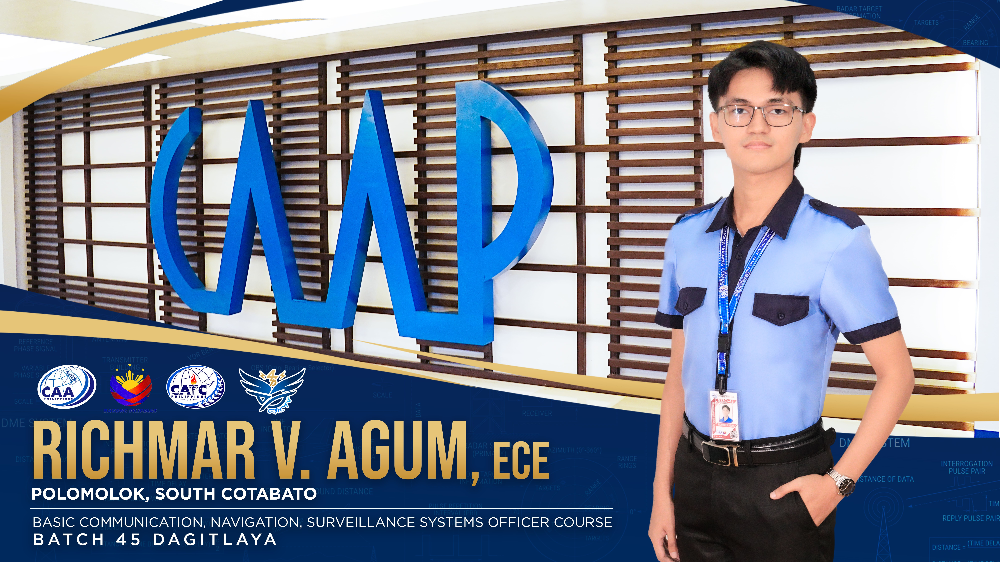
Testing Center - COTABATO
I entered CATC hoping to become resilient and prepared for every challenge ahead. Along the journey, CNSSO 45 taught me that growth is never achieved alone. Behind every hardship were people willing to guide, encourage, and lift one another forward. More than technical competence, this experience taught me compassion, trust, and service. As a future CNSSO, I aspire to be reliable, selfless, and worthy of the people who shaped me. Batch DAGITLAYA will always remain the spark of change I carry forward.
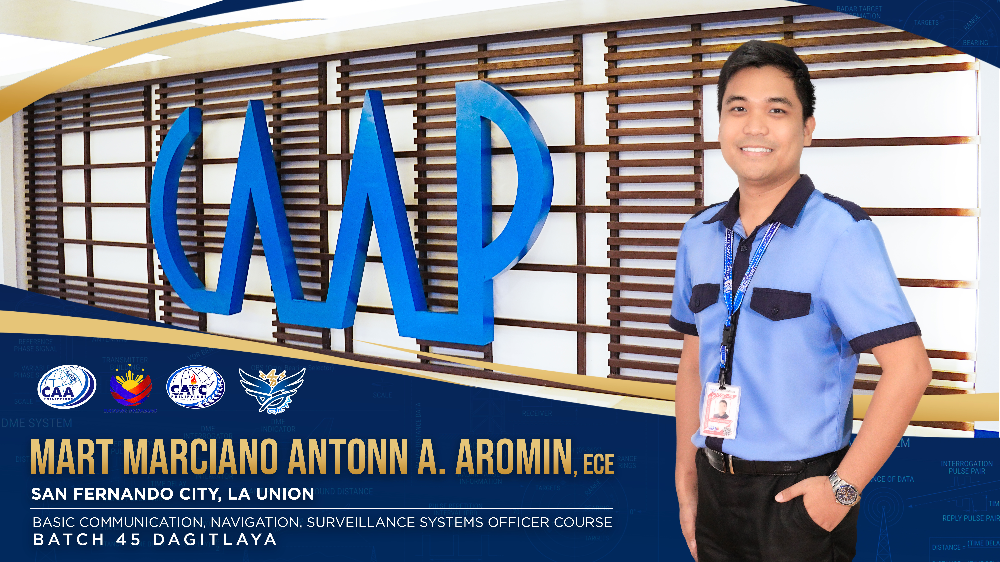
Testing Center - NCR
Taking risks often leads to greater success than remaining in your comfort zone.” Being a Next Generation Aviation Professional through CNSSO has been a challenging yet rewarding journey that has expanded my knowledge, pushed me beyond my limits, and deepened my appreciation for the field of aviation. Through this experience, I have learned the value of teamwork and collaboration, which have encouraged me to embrace growth, step out of my comfort zone, and continuously strive to become the best version of myself.
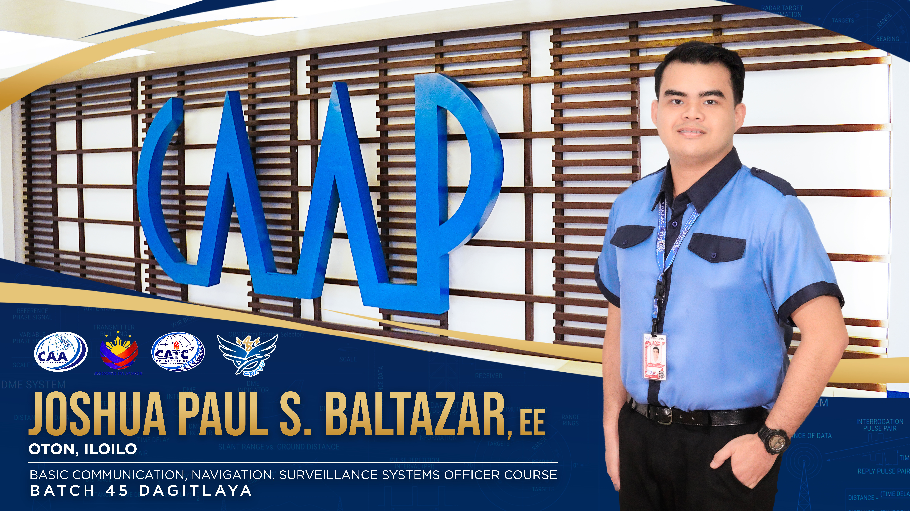
Testing Center - KALIBO
As a future CNSSO, I aspire to contribute to the safety and efficiency of Philippine aviation by ensuring reliable communication, navigation, and surveillance systems. My journey has taught me discipline, perseverance, continuous learning, teamwork, and the value of enjoying the journey with others. Inspired by my family, mentors, and fellow trainees, I remain motivated to develop my skills, serve the public, help strengthen air navigation services, and keep the skies safe for all.
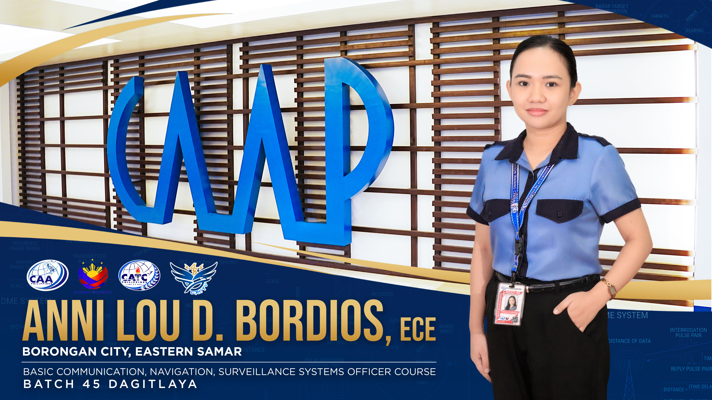
Testing Center - CATARMAN
Every journey begins with a signal, a direction, or a guiding light. Mine was shaped by the lessons I learned, the challenges I overcame, and the people who stood by me through every step. As I move forward, I aspire to become a vigilant and competent professional—someone who can be trusted to safeguard the systems that keep aircraft connected, guided, and safe, helping build a stronger and more reliable future for aviation.
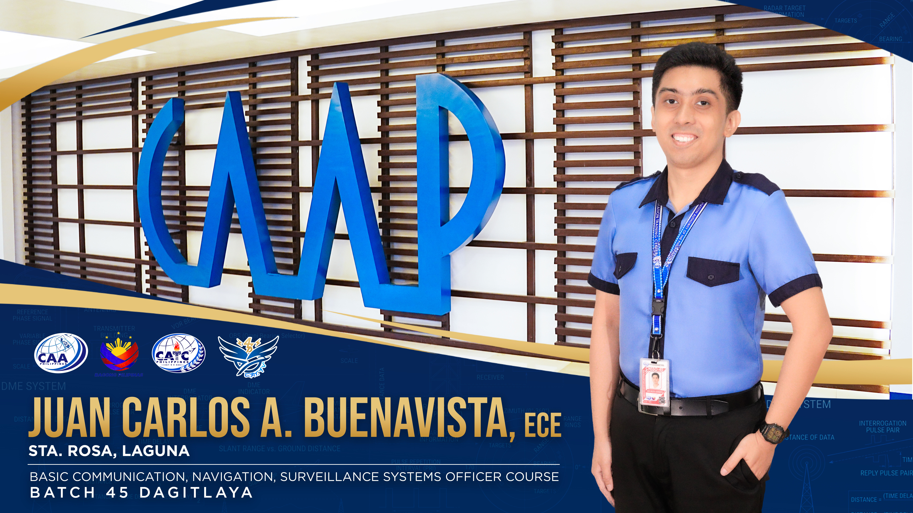
Testing Center - NCR
My late father used to work as an OFW as an Electronics Engineer. Because of this, I remember every time my father returned for the holidays, even experiencing a commercial flight when I visited him in Kuwait. I hope, as a future CNSSO, I am able to contribute to the system that enables people to connect from one side of the world to another, just as what my father and I was able to experience when I was younger.
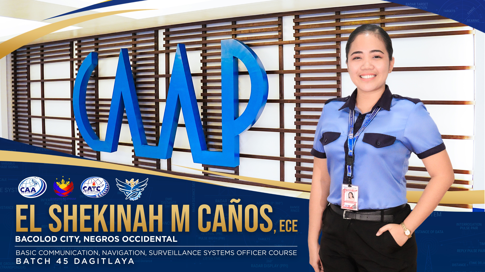
Testing Center - NCR
Ever since I was a child, I have been fascinated by aviation and the way it connects people across great distances. I am honored to have the opportunity to serve the Filipino people in a field that continues to inspire me. God willing, I will do my best to contribute to safe and secure air travel, helping passengers journey with confidence across the Philippines and to destinations around the world.
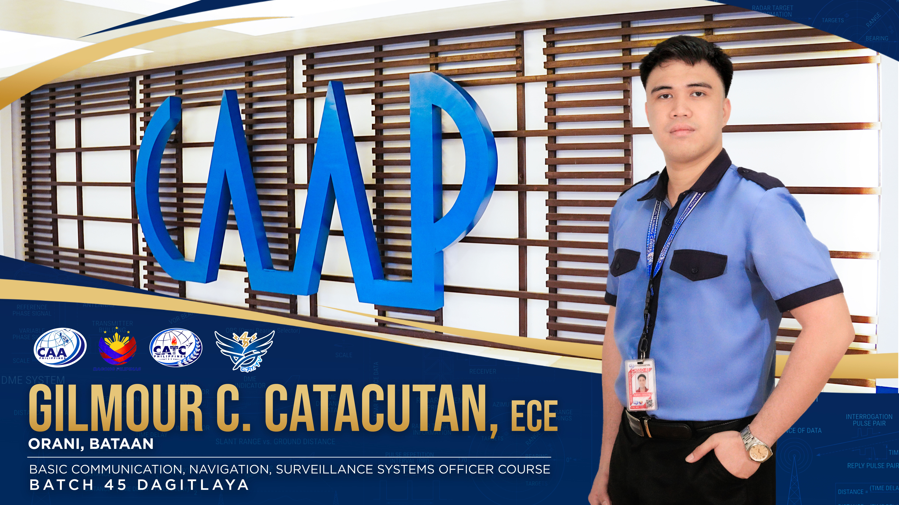
Testing Center - NCR
"As the water shapes itself to the vessel that contains it, so a wise man adapts himself to circumstances." -Confucius
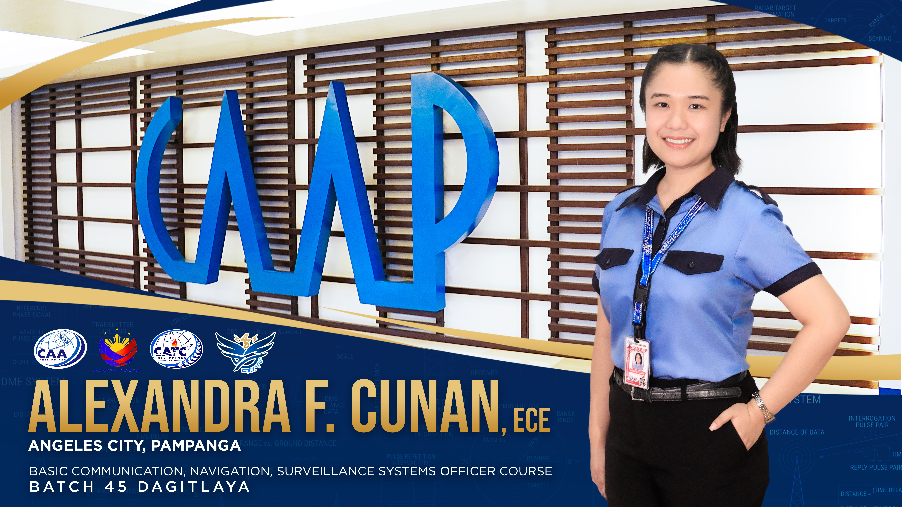
Testing Center - CLARK
As a future CNSSO, I hope to help keep our skies safe through reliable communication, navigation, and surveillance systems. Before the training, I gained experience through various aviation and engineering projects that sparked my interest in the field. The months of training that followed tested my discipline, resilience, and determination. Through the challenges, lessons, and people I met along the way, I learned the value of service and teamwork. I hope to contribute to a safer and more efficient aviation industry.
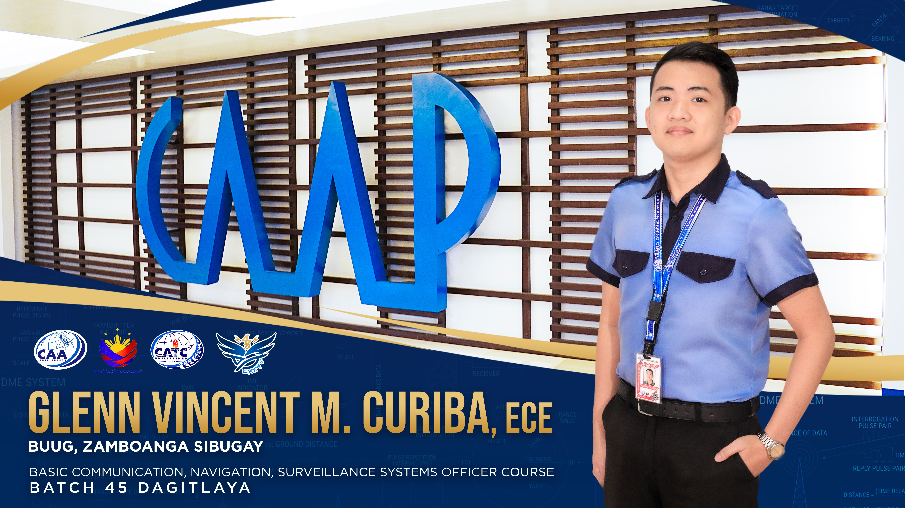
Testing Center - COTABATO
My journey to becoming a CNSSO was not easy, but it taught me to stay strong and focus on what I can control. I am thankful to my family for always supporting me, my batchmates for cheering me up when times were hard, and the admins and instructors of CATC for teaching and guiding us. I hope everything I learned here will help me contribute to the future of the Philippine aviation industry. ^_^
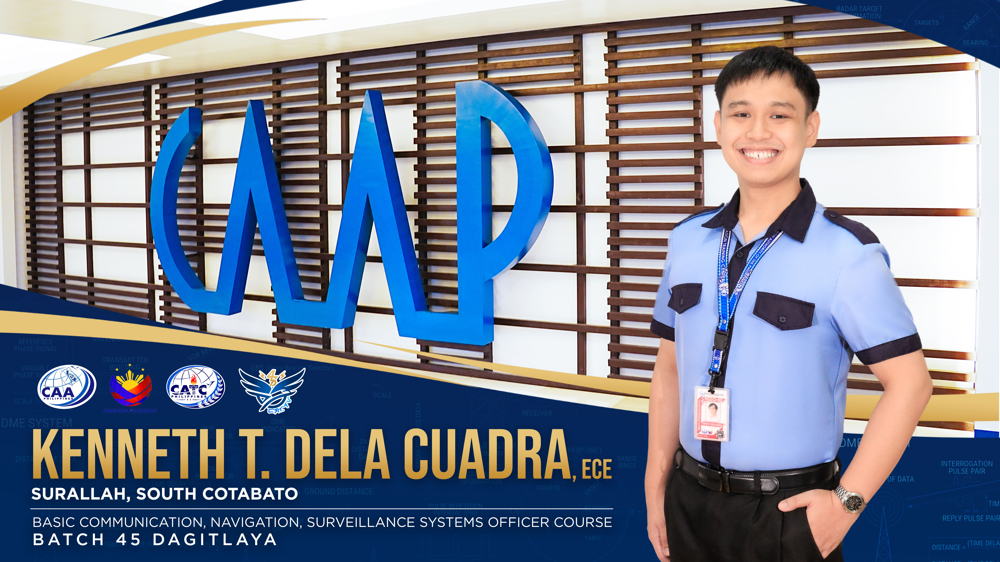
Testing Center - COTABATO
Reflecting back on our journey, I believe my experiences here taught me about the meaning of resilience and the value of uplifting those around me. Moving forward, I aspire to create an environment where every voice is heard and every individual is encouraged to grow.
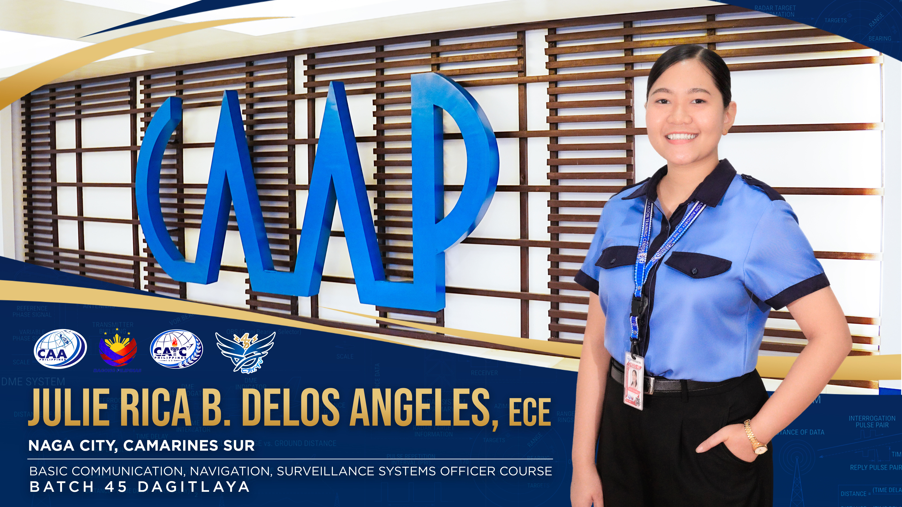
Testing Center - CLARK
This journey has reminded me that it is never too late to pursue a new direction. Coming from a different industry, I stepped into the unfamiliar with faith, hard work, and determination. As I complete my CNSSO training, I am grateful for the lessons and growth along the way. This is not the end, but the takeoff point of a new mission in aviation.
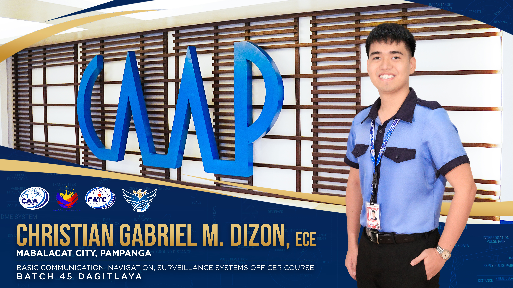
Testing Center - CLARK
I aspire to serve as a CNSSO with professionalism, integrity, and dedication to aviation safety. This training has taught me resilience, enabling me to turn challenges into opportunities, and perseverance in overcoming adversity. Inspired by the responsibility of safeguarding lives, I strive to ensure that every system I oversee reflects trust, innovation, and excellence, contributing to safer skies and elevating aviation standards.
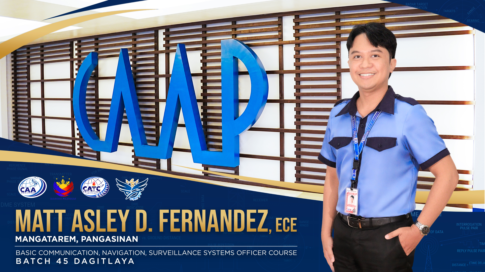
Testing Center - NCR
Surviving eight months of intense (lecture part) and exciting (OJT part) CNS training has proven that aviation safety is built on pure precision. Grateful for the mentors and peers who kept me grounded throughout the training. As a future CNSSO, my aspiration is to ensure flawless airspace connectivity. I look forward to safeguarding every flight, maintaining reliable communication lines, and directly contributing to the integrity of air traffic management.
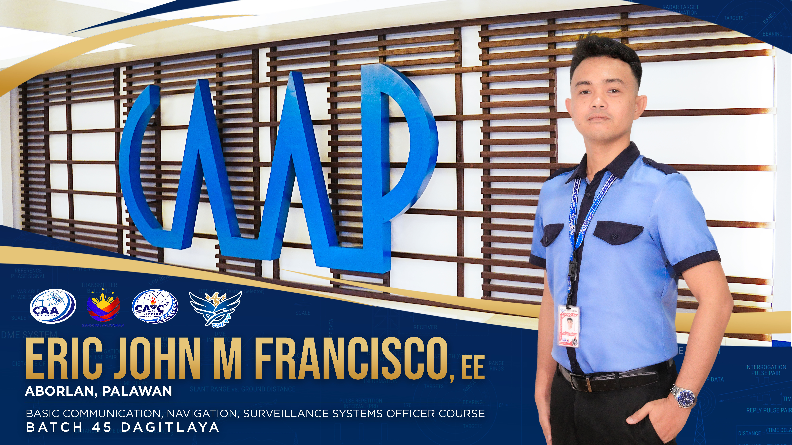
Testing Center - PUERTO PRINCESA CITY
My aspirations on becoming a CNSSO to become a disciplined service-oriented, reliable professional who would contribute in making the skies, specifically air travel to be safe, secure and efficient. My journey taught me to be persevere in able to overcome the challenges and examinations, specially being unsure if I can go though the training, but I thank our God for giving me knowledge and strength, and my family and loved-ones who encouraged me to purse this career. I hope to contribute and make a difference this career and through this career I may be a blessing to the people around me.
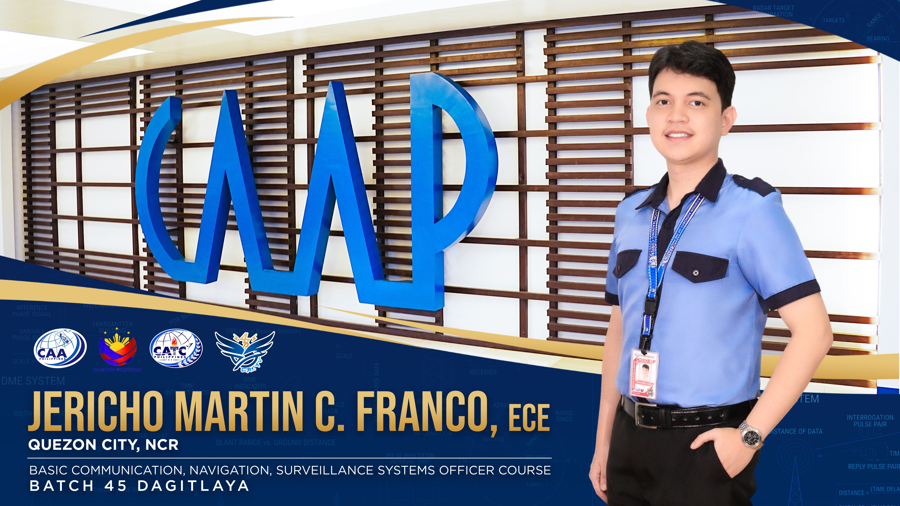
Testing Center - NCR
If there's one thing this journey taught me, it's the meaning of resilience. It tested me in ways I never expected. There were many moments of doubt, but the unwavering support of my loved ones inspired me to keep moving forward. It shaped me into who I am today, and I am thrilled to finally step into my role, ready to solve problems, improve daily operations, and pioneer a truly safe tomorrow
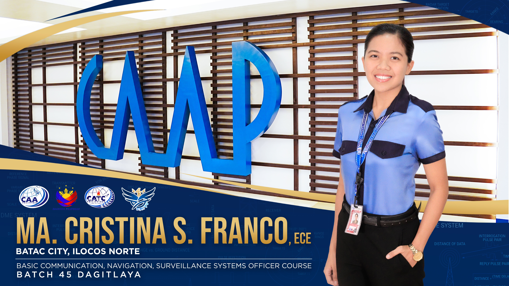
Testing Center - NCR
Stepping into the role of a CNSSO means translating intense academic "hell weeks" into real-world aviation safety. My journey through complex theories and practical training reinforced a core truth, precision saves lives. Inspired by mentors and peers who demand excellence in every frequency and coordinate, my goal is to ensure flawless airspace connectivity. Navigating sleepless nights, anxiety, and the unwavering support of my loved ones has prepared me for this moment. I am now ready to serve as a CNSSO.
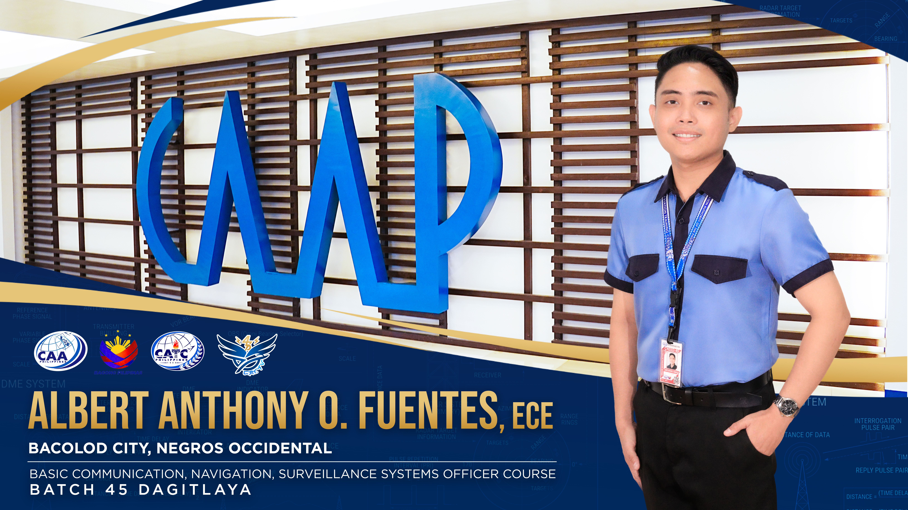
Testing Center - KALIBO
My goal as a future CNSSO is to contribute quietly but meaningfully. I aspire to serve with competence, integrity, and a heart for continuous learning. This journey taught me resilience, and the people who believed in me have become my motivation to keep growing, keep striving, and never lose sight of why I started.
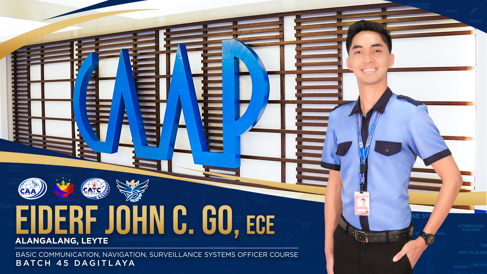
Testing Center - CATARMAN
As a future CNSSO of the Civil Aviation Authority of the Philippines, I aspire to help build a safer and more reliable aviation system through discipline, integrity, and technical excellence. My journey has taught me resilience, teamwork, and the importance of staying calm under pressure. Inspired by mentors, colleagues, and every challenge overcome, I aim to serve with dedication and continuously improve the systems that keep air travel safe for every Filipino.
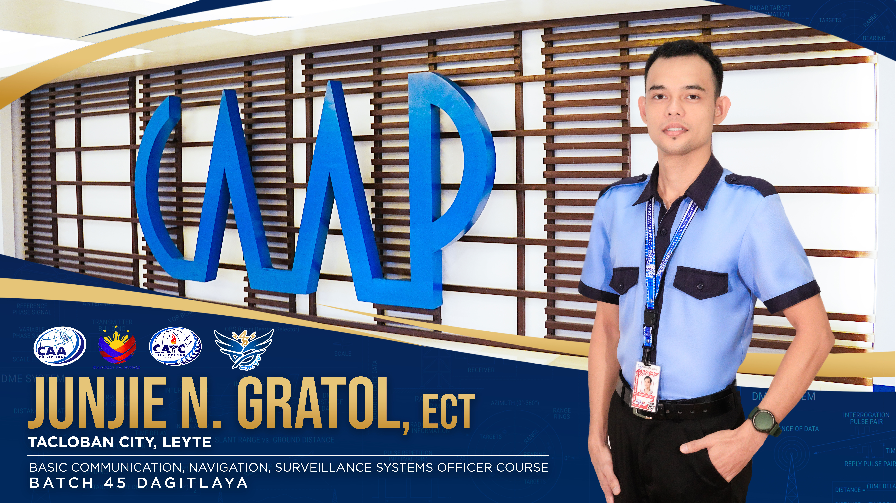
Testing Center - CATARMAN
Being in public service for more than 7 years, to serve the country under CAAP would be an honor. I believe that CAAP's principles and core values are naturally aligned with mine. With these, I can assure that I would be fully committed to do my part as a future CNSSO (Air Traffic Safety Electronics Personnel) and as part of the Air Navigation Service workforce in pursuit of CAAP's mission in ensuring a safe, secure, and sustainable Philippine Civil Aviation.
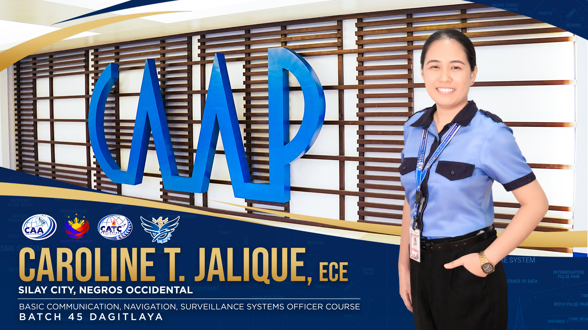
Testing Center - KALIBO
As someone who grew up near an airport, I watched planes take off and land every day, unaware of the dedication behind each flight. As a future CNSSO, my greatest hope is that whenever my family, friends, or I board a plane, we can do so with confidence, knowing safety is ensured. This journey would not have been possible without my family’s unwavering support, the friends who stood by me, and my fellow future CNSSOs who laughed, cried, and grew with me.
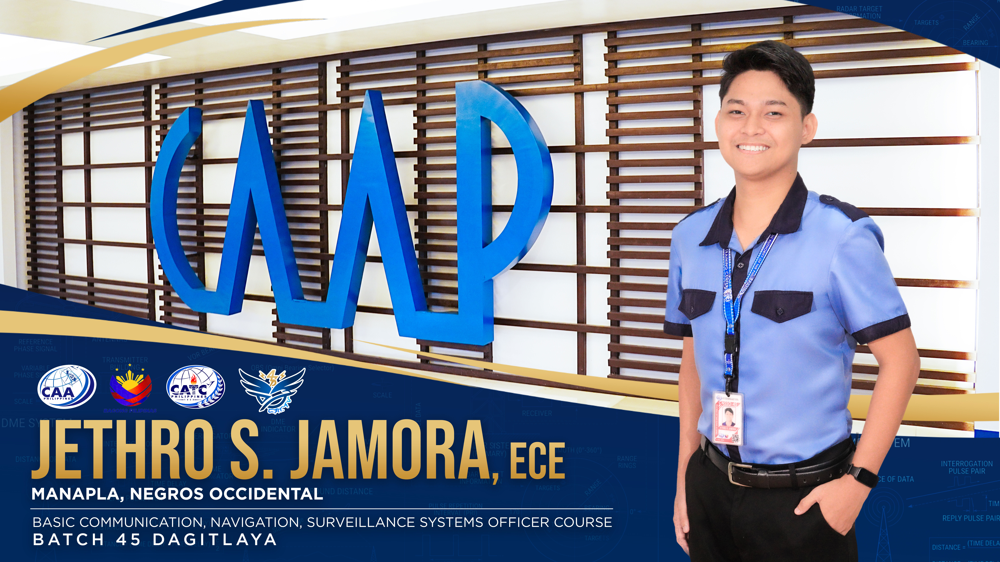
Testing Center - KALIBO
Becoming a CNSSO means committing to the invisible infrastructure that keeps every flight safe. My aspiration is to master the full CNS spectrum. Not just maintaining systems, but understanding them deeply enough to anticipate failures before they occur. I aim to carry that standard by building a culture of proactive maintenance, technical excellence, and knowledge-sharing, making every airspace I serve more predictable, safe, and resilient. This CNSSO journey also thought me that no matter how well prepared you are, there are things that we can't control and that go out of our way. You just have to be resilient and adapt to every challenge and hardship that you've faced and enjoy the process.
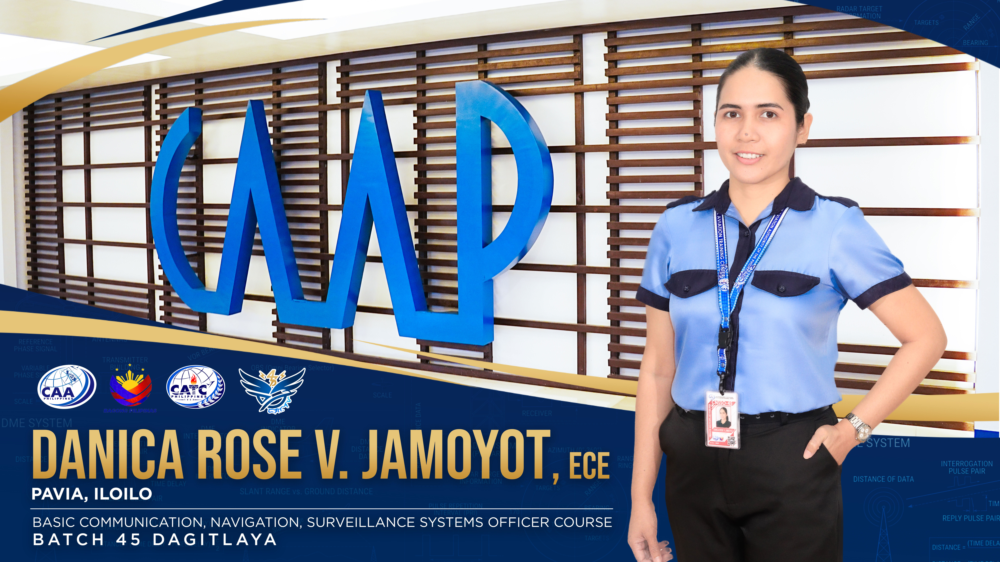
Testing Center - KALIBO
Becoming a CNSSO is more than a career opportunity for me—it is a step toward fulfilling a dream I have carried for many years. This training journey challenged me, helped me rediscover my confidence, and reminded me that learning never stops. The encouragement of my loved ones, instructors, and the friendships I formed along the way inspired me to persevere. As a future CNSSO, I hope to serve with dedication, contribute positively to aviation, and help make every flight safer.
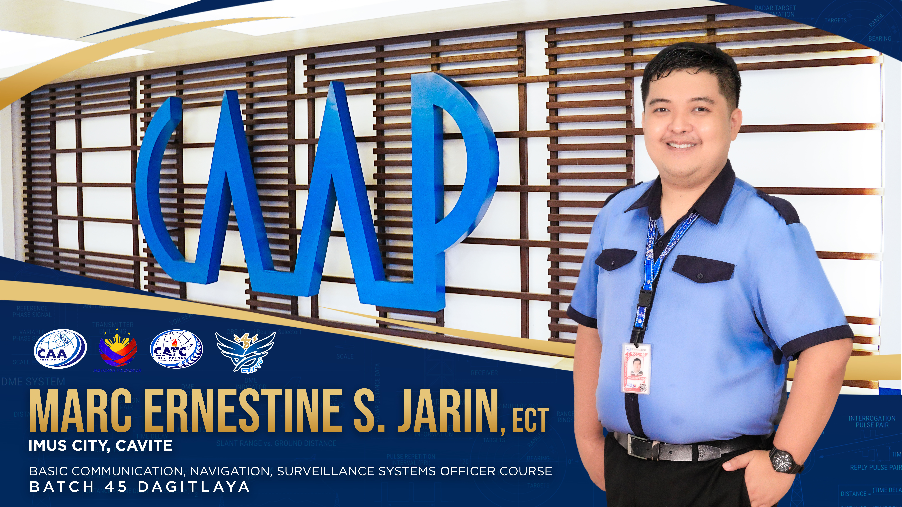
Testing Center - NCR
Keep walking
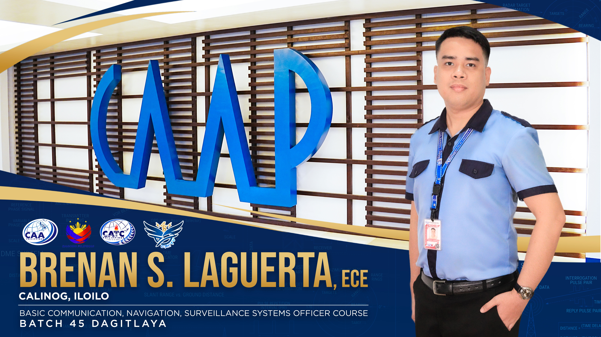
Testing Center - KALIBO
Major life turns often come from unexpected places. For me, it came when my wife indroduced and encourage me to take this training for BCNSSO. Seeing her work environment opened my eyes to a vital side of aviation. I decided to take a big risk and apply. Now I know exactly why this profession is so critical to the aviation industry. Going through this process has made me realize why the standards are so incredibly high.
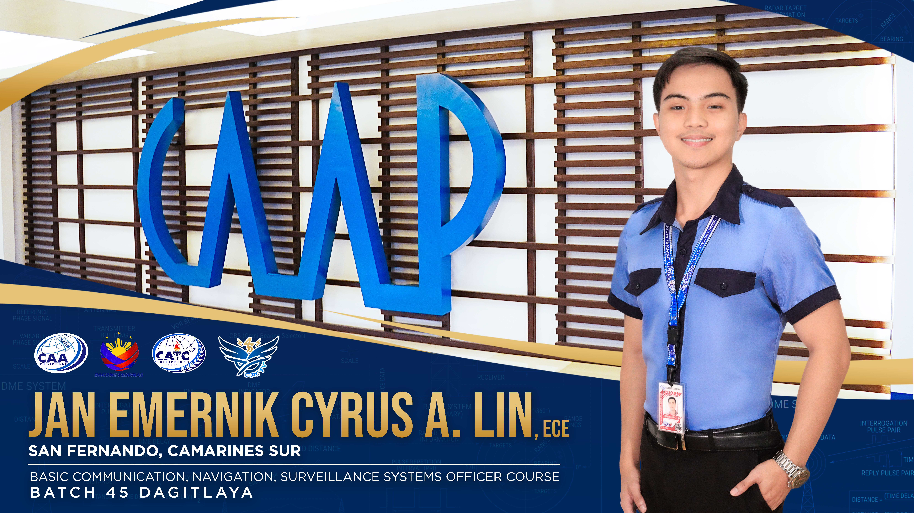
Testing Center - CLARK
Forged through sacrifice, destined for the skies. The world sees the aircraft that takes flight, but few see what made the journey possible.
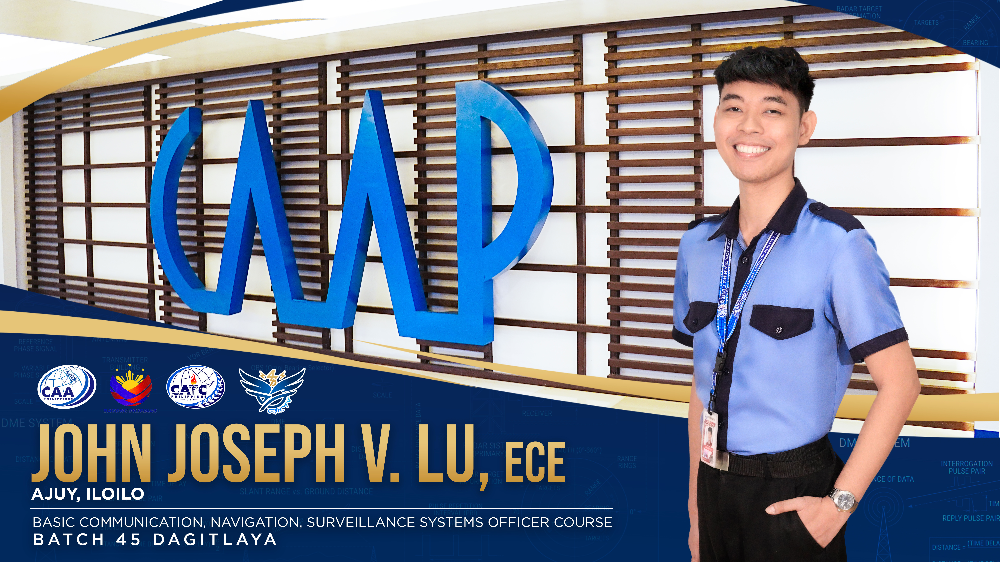
Testing Center - KALIBO
My journey held ups and downs, unplanned detours that hid the destination, but with God's grace, my family and friends at my back, and also my mentors' heartfelt guidance, I have kept moving forward. As a future CNSSO, my impact will be quite and sacred. It's to make sure every passenger who leaves the ground hears "home" when they land. That's my job. Incepto ne desistam.
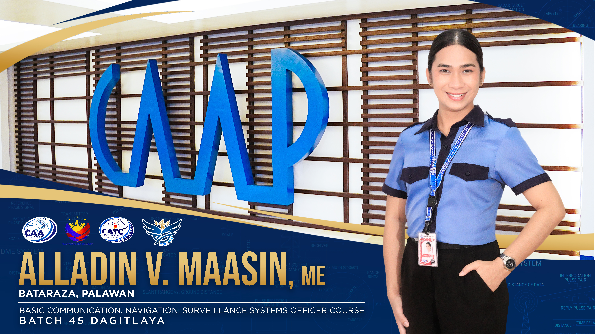
Testing Center - Puerto Princesa City
The first time I learned about the CNSSO profession online, I was intrigued and decided to apply. Now that I have the opportunity to train for it, my passion has only grown stronger. I aspire to build a meaningful career in this field, serving the country by helping ensure reliable and efficient CNS systems. This journey taught me the value of perseverance and community. To my batchmates—thank you for your unwavering support, I am proud to be part of batch DAGITLAYA.
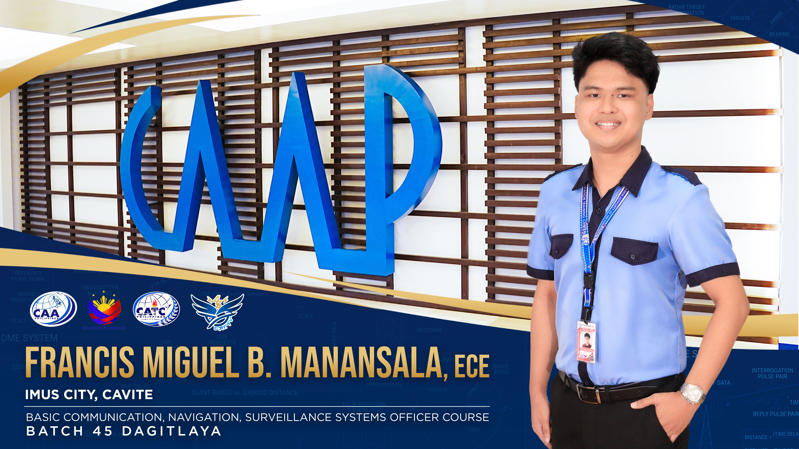
Testing Center - NCR
The journey to becoming a CNSSO has been challenging. We’ve faced numerous hardships, trials, and lessons that have shaped us into the individuals we are today. These experiences are essential because being a CNSSO, and a public servant demands excellence and competency. As a future CNSSO, contributing to the safety of the aviation industry brings me immense fulfillment. Knowing that my work has a profound positive impact on society is truly remarkable, which is why I approached my training with utmost dedication.
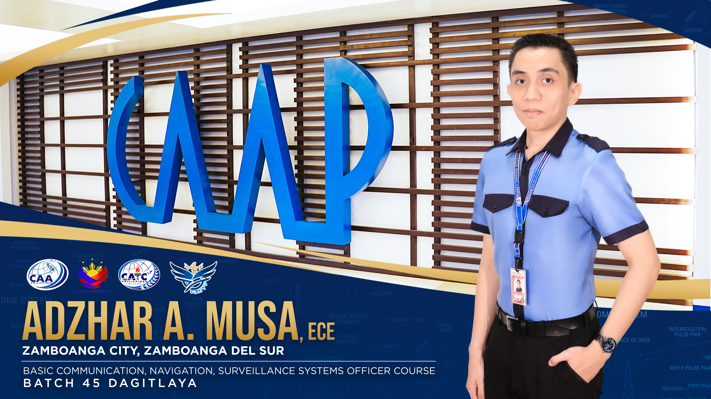
Testing Center - NCR
I joined the BCNSSO program as a leap of faith toward pursing Ikigai—where my engineering background, passion for aviation, and CAAP’s mission converged. The journey itself was demanding, but the support of my kind and exceptional co-trainees made it worthwhile. As future ATSEPs, we carry the responsibility of keeping Philippine skies safe and efficient. I hope our dedication leaves a lasting impact on Philippine aviation and serves as a source of pride for our batch in the years ahead.
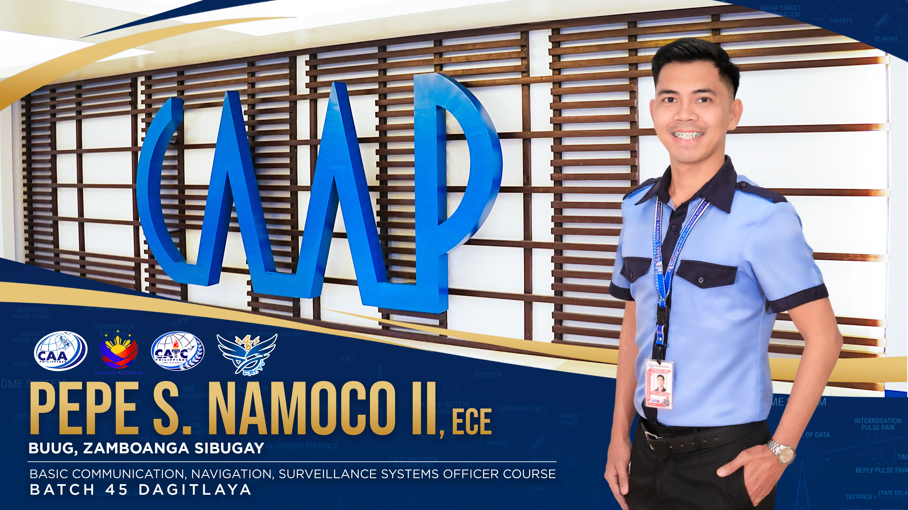
Testing Center - COTABATO
To contribute all my knowledge and capabilities for the safety of operations of Civil Aviation Authority of the Philippines
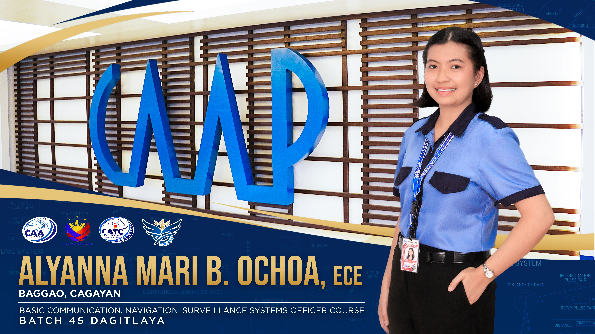
Testing Center - CLARK
This training made me realize just how complex aviation really is, and how people work together behind the scenes to keep everything safe and running smoothly. It gave me a deeper appreciation for the engineering, teamwork, and care that go into every flight, and made me even more motivated to be part of this field. 🛫
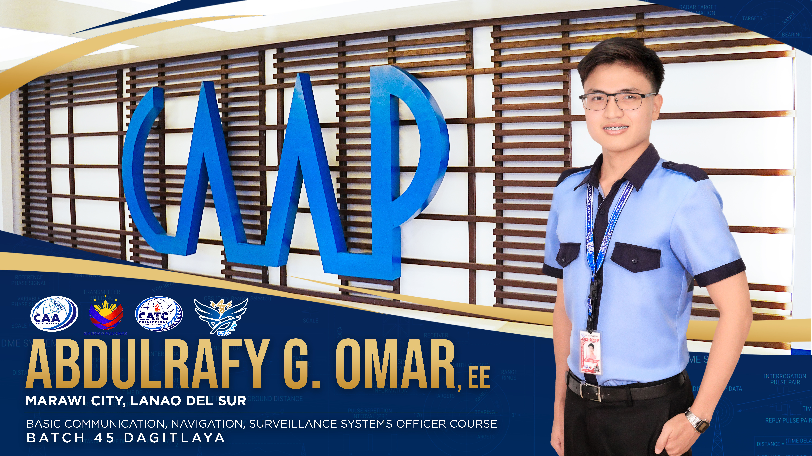
Testing Center - COTABATO
Inspired by Imam Al-Ghazali’s profound wisdom that 'knowledge without action is vanity,' my journey at CATC under the guidance of my mentors has shown me that the true measure of technical mastery lies in the lives it protects. As a future CNSSO, I am driven to build a bright future by transforming this expertise into unwavering dedication, ensuring the safety of our airspace and proudly serving the country.
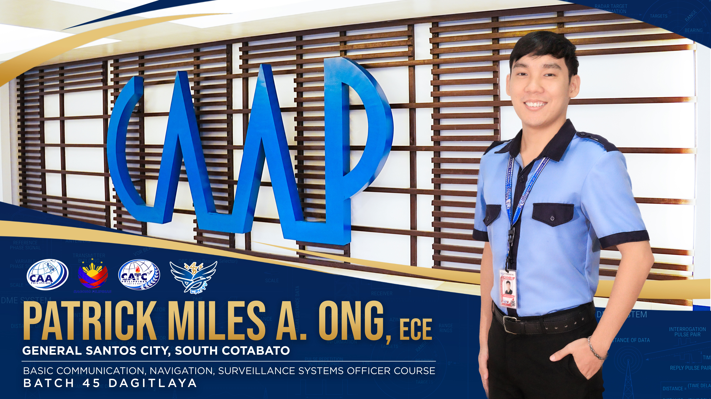
Testing Center - COTABATO
I want to learn more things about aviation and electronics so that i can impart some of my knowledge and wisdom to the future generations and also to keep the skies safe for everyone.
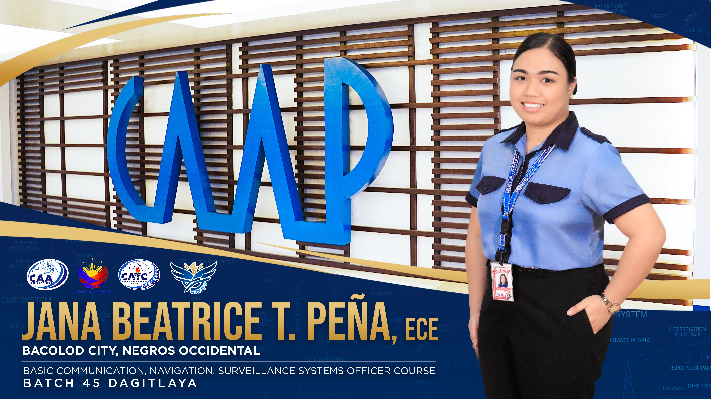
Testing Center - NCR
My journey as a CNSSO taught me that leadership flourishes through patience and grace. Systemic growth requires the patience to honor diverse perspectives, weaving varied threads through complex hurdles. Simultaneously, grace bridges the gap between policy and people, ensuring every voice feels authentically valued and heard. Guided by these principles and the wisdom of mentors, I aim to amplify voices, transforming shared struggles into a vibrant, lasting legacy of community change.
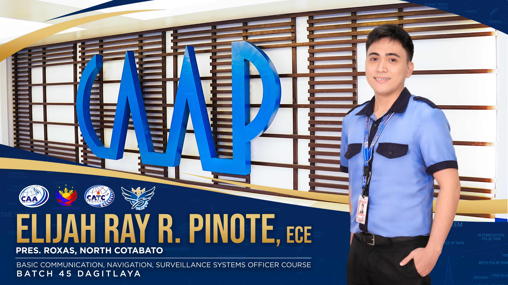
Testing Center - COTABATO
As a future CNSSO, I aspire to contribute to safe, reliable, and efficient air navigation services by ensuring the continuous operation of communication, navigation, and surveillance systems. My journey has taught me the value of discipline, teamwork, and lifelong learning. The dedication of aviation professionals and mentors has inspired me to persevere through challenges. I hope to make a positive impact by upholding safety, embracing innovation, and supporting the advancement of the aviation industry
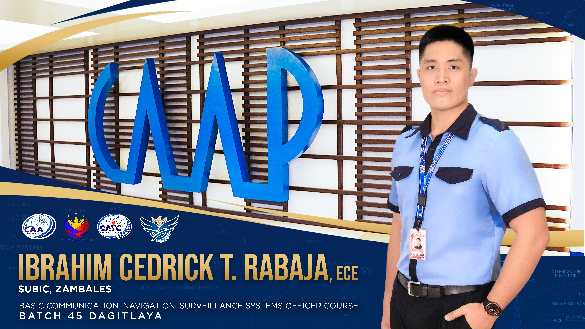
Testing Center - CLARK
"Upon completing my training, I aspire to contribute to the safety and efficiency of Philippine airspace by applying the knowledge and skills I have developed through continuous training and professional growth, in service of the Filipino people." To my future self and all that you will accomplish, remember where it began. You started in darkness, guided only by faith in yourself and the conviction that your efforts would lead somewhere greater. You took a leap of faith when the path ahead was uncertain, and today you stand as proof that it was worth taking. Never forget how far you have come, and never doubt yourself. The courage that brought you here will continue to carry you forward to even greater heights.
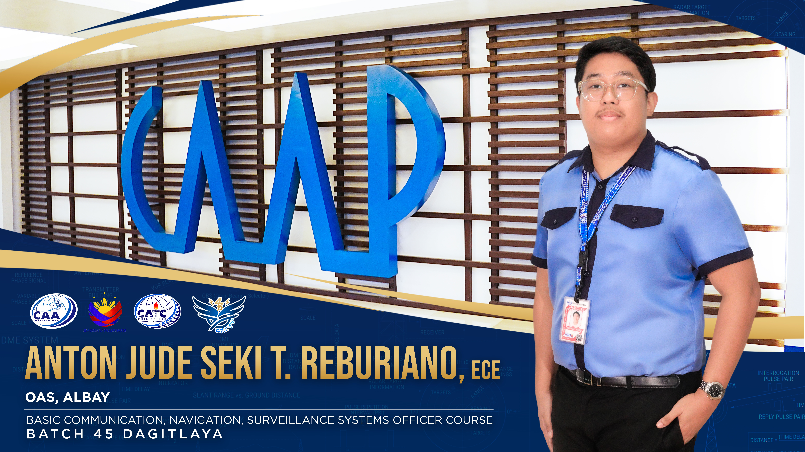
Testing Center - NCR
As a future CNSSO, I aspire to help ensure the safety and efficiency of air navigation services by maintaining reliable communication, navigation, and surveillance systems that support aviation operations. My journey has taught me the value of discipline, continuous learning, and perseverance, inspired by the mentors, colleagues, and experiences that have motivated me to keep improving and serving with excellence.
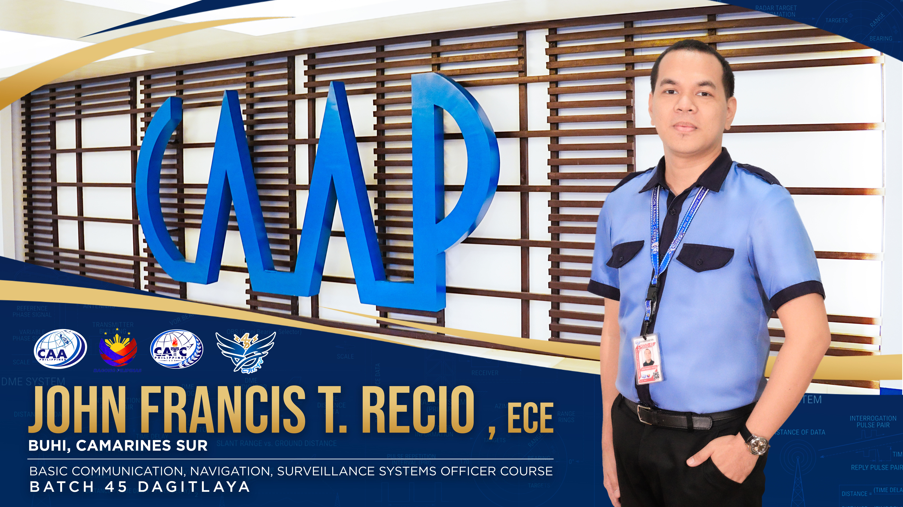
Testing Center - NCR
We will continue to provide reliable Air Navigation Services that ensure the safety of our stakeholders in every flight. Through our commitment to operational excellence, continuous improvement, and the maintenance of dependable CNS systems, we strive to support safe, efficient, and seamless air traffic operations while upholding the highest standards of aviation safety and service. Batch Dagitlaya, Lakad Matatag.
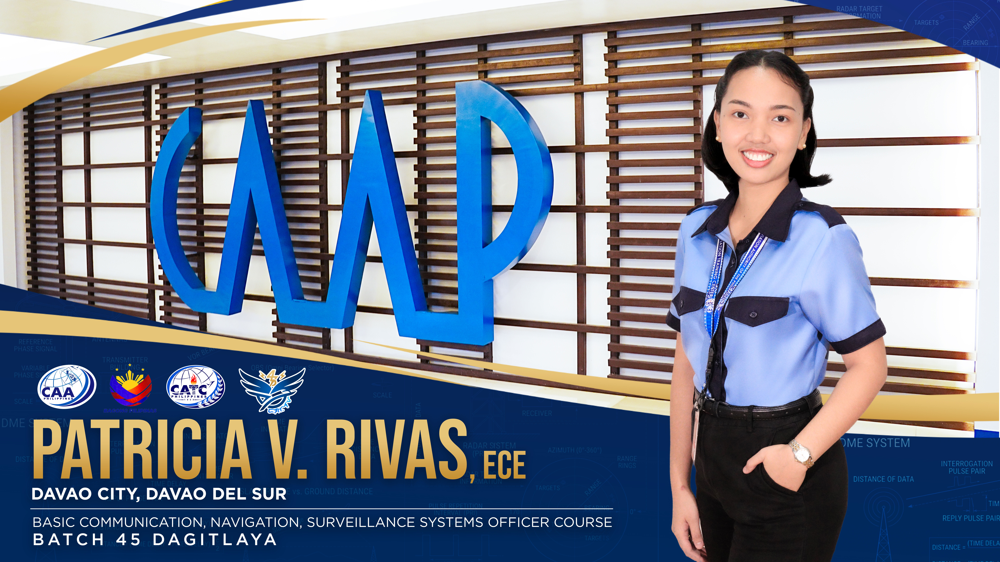
Testing Center - COTABATO
“Mind at the beginning, what matters most in the end.” I asked God for direction, and He answered with Philippians 1:6 — a promise that anchored me when quitting felt easier. As future CNSSOs, we're called to keep Philippine skies safe, ensuring every system guides aircraft on their journey. My family, my spiritual family, my duty to God, and the unseen heroes behind each flight fuel me forward. Through intimacy and journey with Christ, I strive to serve with unshaken faith, purpose, and gratitude.
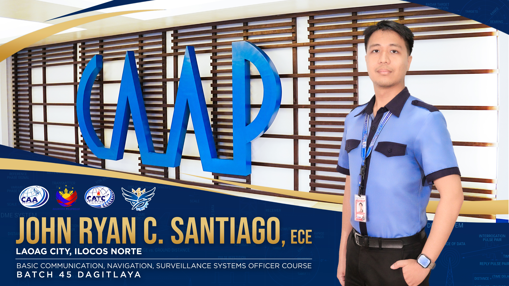
Testing Center - CLARK
As a future CNSSO, I aspire to contribute to safer skies and prove that the Filipinos can deliver world-class aviation service rooted in genuine public service.
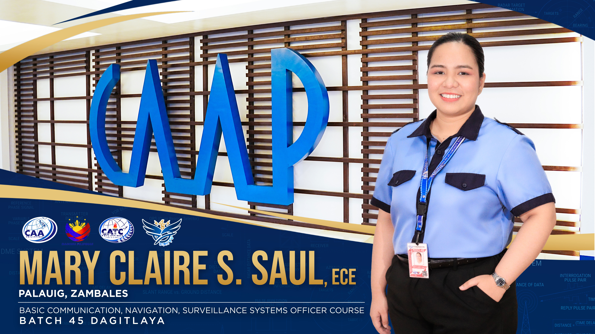
Testing Center - NCR
Ever since I was a child, airports have felt like a second home to me. As a future CNSSO, I want to contribute to making every passenger's journey safe and efficient. This journey has taught me the value of public service, which I have always aspired to pursue. I am grateful for the opportunity to contribute in strengthening the aviation industry in our country. This would not have been possible without my family's support, our instructors' guidance, and my batchmates' camaraderie.
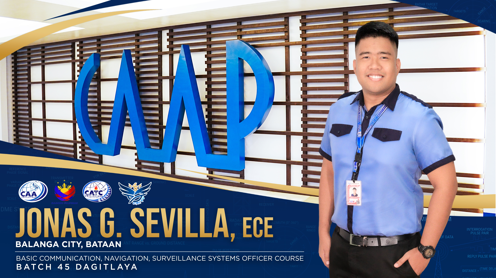
Testing Center - CLARK
As a CNSSO, I aspire to contribute to the continuous growth of Philippine aviation and help ensure the safety of our skies. This training has been one of the most challenging yet rewarding journeys of my life, filled with lessons, uncertainties, and growth. I am deeply grateful to my family, friends, and fellow trainees for their unwavering support. The knowledge gained and the opportunity to serve in the country’s Air Navigation Services are privileges I will always cherish.
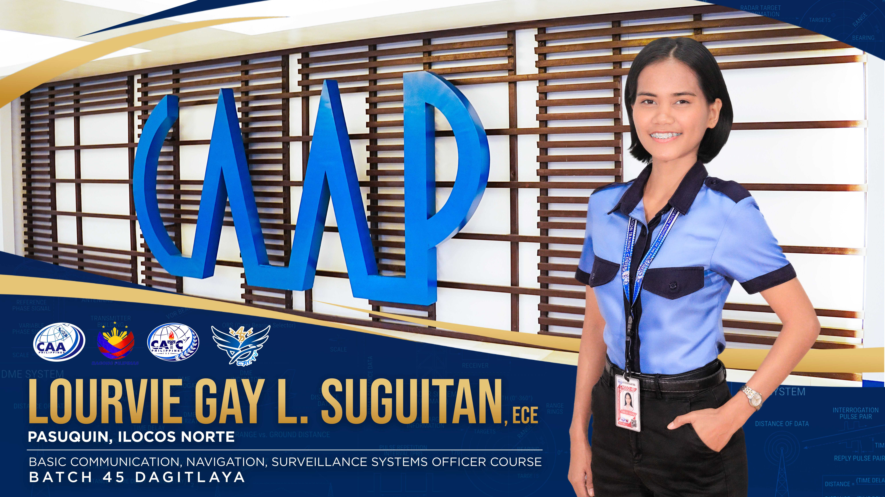
Testing Center - CLARK
As a future CNSSO, I aspire to help maintain a safe, reliable, and efficient airspace while continuously developing my expertise in the field. During this training journey, I have developed a stronger faith and deeper sense of discipline, along with an appreciation for precision and accountability in aviation safety. Despite the challenges and pressure, I persevered through faith in God and the support of my family, friends, and fellow trainees. Inspired by my mentors and my commitment to public service, I hope to one day guide and inspire future engineers.
Testing Center - NCR
My dream is to work in the aviation industry, particularly in the technical field, as a future CNSSO. I am inspired by aviation professionals who work tirelessly to keep the airspace safe 24/7. My journey has taught me the values of discipline, responsibility, teamwork, and continuous learning. Despite challenges, I remain determined to grow and contribute to aviation safety. I hope to help maintain reliable CNS systems and support safe, efficient air navigation services for everyone.
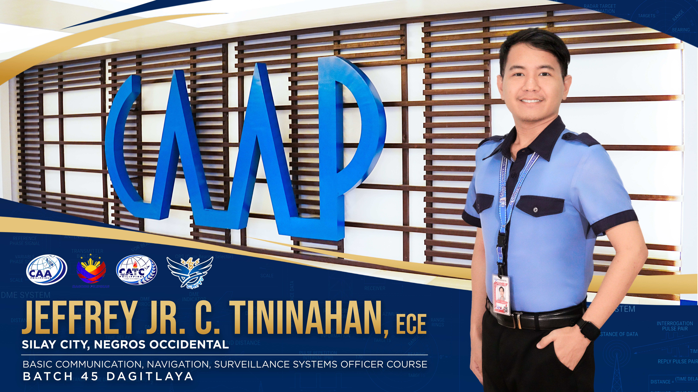
Testing Center - KALIBO
I hope to make the skies safer for everyone involved, and that my contributions as a future CNSSO member will help push and add to the momentum that CAAP hopes the aviation industry in the Philippines will eventually achieve. All the lessons learned from everyone in CATC will help me with the choices I will make in the future.
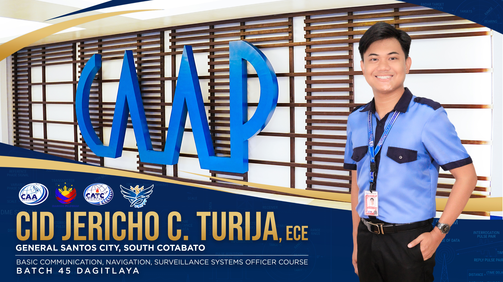
Testing Center - COTABATO
Fueled by my profound interest in aviation, I aspire to be part of a community that ensures safe, efficient, and innovative air operations as a CNSSO. Throughout my journey, I have learned the value of discipline, collaboration, and adaptability in achieving shared goals, while also forming lasting friendships and meaningful connections that made my experiences more memorable. Ultimately, I hope to contribute to a system where safety and reliability are not just standards—but promises fulfilled in every flight.
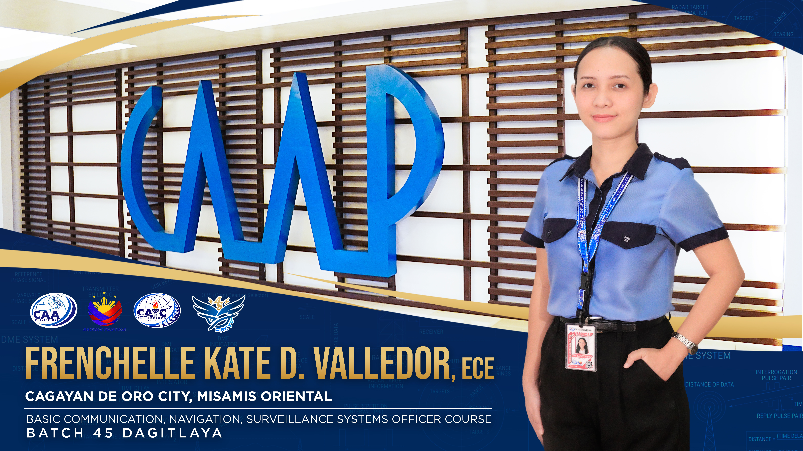
Testing Center - COTABATO
From the moment this role was introduced to me, there was no second-guessing that it was worth pursuing. The journey has been far from straightforward, but highly instructive. I owe much to the people behind me, whose unwavering support carried me forward; to those who stood before me, who offered guidance and shared their knowledge; and most importantly, to the Lord above, who makes all things possible. I hope to apply what has been instilled in me by providing value in service to the Philippines and its people.
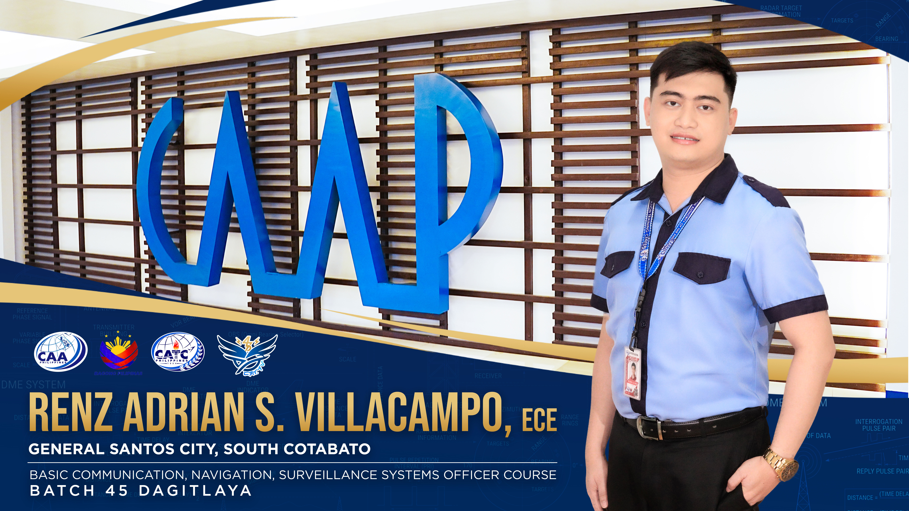
Testing Center - COTABATO
My journey from ALPT to aspiring CNSSO is rooted in growth. I have learned that service becomes more meaningful when shared with people who support and understand one another. Because someone once stood by me, I also learned to stand by others. As a future CNSSO, I hope to become a dependable presence in the department.